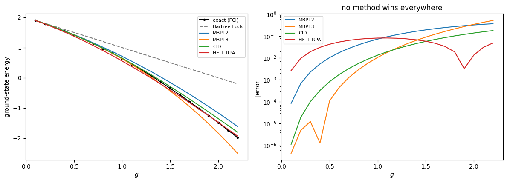
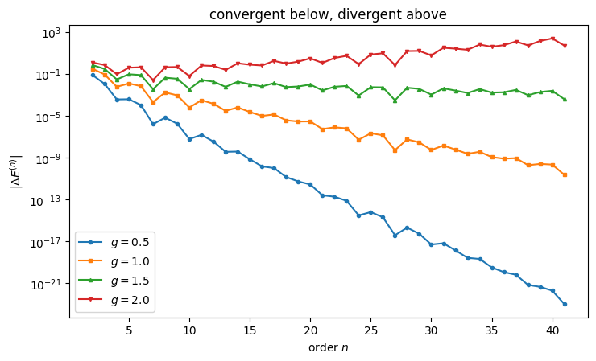
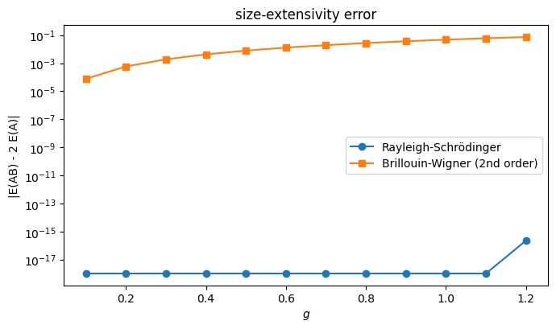

10. Many-body perturbation theory#
Companion notebook to Chapter 9 of Quantum mechanics for many-particle
systems. Every number quoted in the chapter is produced here; the code is
the same as in BookManybody/BookMaterial/Programs/mbpt.py.
Everything is done in the determinant basis of Chapter 5, where \(\hat H_0\) is diagonal and the perturbation is the rest of the matrix. With \(\hat R = \hat Q/(W_0-\hat H_0)\) the Rayleigh-Schrödinger series follows from
which reproduces the explicit first, second and third-order expressions and continues to any order.
Contents:
The recursion against the explicit expressions
The pairing model
Higher order: does the series converge?
The Lipkin model
Size extensivity: Rayleigh-Schrödinger against Brillouin-Wigner
Brillouin-Wigner and its exact resummation
The Hubbard model
The pairing plus particle-hole model
Does the partition matter?
Everything against everything
import sys, os
import numpy as np
import matplotlib.pyplot as plt
sys.path.insert(0, os.path.join("..", "BookManybody", "BookMaterial", "Programs"))
import mbpt
np.set_printoptions(precision=6, suppress=True, linewidth=120)
10.1. 1. The recursion against the explicit expressions#
The second term of the third-order energy — the renormalisation term — is the one to watch. It is what makes the series size extensive.
mbpt.demo_recursion()
==========================================================================
1. The recursion against the explicit expressions
==========================================================================
The series can be generated by a recursion or written out term by
term. They must agree, and the third-order agreement is the
interesting one, because it is there that the renormalisation
term first appears.
model E1 E2 E3 (recursion) E3 (explicit)
pairing -0.50000000 -0.07291667 -0.01041667 -0.01041667
Lipkin 0.00000000 -0.12000000 0.00000000 0.00000000
Hubbard 3.00000000 -0.40277778 0.00000000 0.00000000
pairing + p-h -0.55000000 -0.08929167 -0.01386153 -0.01386153
The two pieces of the third-order term, for the pairing model at
g = 0.5:
principal term sum_mn V_0m V_mn V_n0 / D_m D_n = -0.02300347
renormalisation V_00 sum_m V_0m V_m0 / D_m^2 = -0.01258681
difference Delta E^(3) = -0.01041667
The renormalisation term is not a small correction here: it is
larger than the third-order energy itself. Its role is to cancel
the unlinked contribution, which is what makes the series size
extensive -- as section 5 below demonstrates.
10.2. 2. The pairing model#
Four doubly degenerate levels, four particles, \(\xi=1\). The energy through first order is \(2-g\), which is exactly the Hartree-Fock energy of Chapter 6 — for this interaction the mean field does nothing, so everything beyond first order is genuine correlation energy.
mbpt.demo_pairing()
==========================================================================
2. The pairing model
==========================================================================
Four doubly degenerate levels, four particles, xi = 1. The
unperturbed reference energy is W_0 = 2 and the first-order energy
is -g, so E_ref = 2 - g, which is the Hartree-Fock energy of
chapter 6: the mean field does nothing for this interaction.
g E_ref +E2 +E3 FCI CID HF+RPA
0.25 1.75000 1.73177083 1.73046875 1.73045985 1.73050700 1.71634735
0.50 1.50000 1.42708333 1.41666667 1.41677428 1.41759645 1.37450235
1.00 1.00000 0.70833333 0.62500000 0.63554847 0.64890655 0.55458933
1.50 0.50000 -0.15625000 -0.43750000 -0.34819051 -0.29113175 -0.40624787
2.00 0.00000 -1.16666667 -1.83333333 -1.48965216 -1.35208670 -1.47622319
Second order already recovers most of the correlation energy and
third order improves on it, but the series is not variational:
nothing forbids it from crossing the exact answer, and at g = 2
it does. Compare with CID, which is variational and therefore
always above, and with RPA, which sums a particular class of
contributions to all orders.
import rpa as rpamod
import fci
gs = np.linspace(0.1, 2.2, 22)
fock = rpamod.FockSpace(4)
ref, m2, m3, cid, rpa_e, exact = [], [], [], [], [], []
for g in gs:
part, model = mbpt.pairing_partition(g=g)
e = mbpt.rayleigh_schrodinger(part, order=3)
r0 = part.reference_energy
ref.append(r0); m2.append(r0 + e[1]); m3.append(r0 + e[1] + e[2])
cid.append(model.energies(2)[0])
rr = rpamod.tda_rpa(fock, 4, g, 0.0)
rpa_e.append(rr["hf"] + rr["ecorr"])
exact.append(part.exact())
fig, ax = plt.subplots(1, 2, figsize=(12, 4.4))
ax[0].plot(gs, exact, "k-o", ms=3, label="exact (FCI)")
ax[0].plot(gs, ref, "C7--", label="Hartree-Fock")
ax[0].plot(gs, m2, "C0-", label="MBPT2")
ax[0].plot(gs, m3, "C1-", label="MBPT3")
ax[0].plot(gs, cid, "C2-", label="CID")
ax[0].plot(gs, rpa_e, "C3-", label="HF + RPA")
ax[0].set_xlabel("$g$"); ax[0].set_ylabel("ground-state energy")
ax[0].legend(fontsize=8)
for y, lab, c in ((m2, "MBPT2", "C0"), (m3, "MBPT3", "C1"),
(cid, "CID", "C2"), (rpa_e, "HF + RPA", "C3")):
ax[1].semilogy(gs, np.abs(np.array(y) - np.array(exact)), c, label=lab)
ax[1].set_xlabel("$g$"); ax[1].set_ylabel("|error|")
ax[1].set_title("no method wins everywhere")
ax[1].legend(fontsize=8)
fig.tight_layout(); plt.show()

The error panel is the interesting one. At small \(g\) third-order perturbation theory is best by orders of magnitude and RPA is the worst; by \(g=2\) the ordering has reversed completely.
10.3. 3. Higher order: does the series converge?#
The recursion continues to any order, so we can look rather than guess.
mbpt.demo_orders()
==========================================================================
3. Going to higher order: does the series converge?
==========================================================================
The recursion continues to any order, so we can watch the series
itself rather than guess. For the pairing model, the size of the
n-th term:
g |E(2)| |E(5)| |E(10)| |E(20)| |E(40)| through 20 exact
0.50 7.29e-02 3.62e-04 5.71e-08 2.63e-12 1.90e-22 1.4167743 1.4167743
1.00 2.92e-01 1.16e-02 5.85e-05 2.76e-06 2.09e-10 0.6355478 0.6355485
1.50 6.56e-01 8.79e-02 3.37e-03 9.17e-03 2.31e-03 -0.3532205 -0.3481905
2.00 1.17e+00 3.70e-01 5.99e-02 2.89e+00 2.30e+02 -3.7973859 -1.4896522
2.50 1.82e+00 1.13e+00 5.58e-01 2.51e+02 1.73e+06 -240.3581222 -2.7371418
At g = 0.5 and g = 1 the terms fall away steadily and the partial
sums reproduce the exact energy to every digit shown: the series
converges. At g = 2 and beyond the terms grow without limit --
by ten orders of magnitude between the tenth and the fortieth --
and the partial sums are meaningless. Somewhere between g = 1 and
g = 2 lies the radius of convergence, and g = 1.5 sits close to
it: the terms there decrease so slowly that no finite number of
them settles the question.
This is worth taking seriously. Perturbation theory is an
expansion about the reference determinant, and once the true
ground state has stopped resembling it the expansion has nothing
to say -- no amount of further work at higher order helps, and
the divergence is not visible from the first few terms. At
g = 1.5, second and third order look perfectly reasonable:
E_ref = 0.50000, through second = -0.15625,
through third = -0.43750, exact = -0.34819.
Nothing in those three numbers warns that the series behind them
may not converge. This is the same breakdown that made the mean
field fail in chapter 6 and the truncated configuration
interaction deteriorate in chapter 5, seen from a third direction.
fig, ax = plt.subplots(figsize=(7.5, 4.6))
for g, style in ((0.5, "-o"), (1.0, "-s"), (1.5, "-^"), (2.0, "-v")):
part, _ = mbpt.pairing_partition(g=g)
e = np.abs(np.array(mbpt.rayleigh_schrodinger(part, order=41)))
n = np.arange(1, len(e) + 1)
ax.semilogy(n[1:], np.maximum(e[1:], 1e-30), style, ms=3,
label=f"$g = {g}$")
ax.set_xlabel("order $n$"); ax.set_ylabel(r"$|\Delta E^{(n)}|$")
ax.set_title("convergent below, divergent above")
ax.legend(); fig.tight_layout(); plt.show()

At \(g=0.5\) and \(g=1\) the terms fall away steadily. At \(g=2\) they grow without limit. The radius of convergence lies between — and crucially, the first three orders give no warning: at \(g=1.5\) they look perfectly reasonable.
10.4. 4. The Lipkin model#
Here \(\Delta E^{(1)} = 0\) and \(\Delta E^{(3)} = 0\), both identically, because the interaction changes \(J_z\) by exactly two units. Second order is available in closed form, \(\Delta E^{(2)} = -N(N-1)V^2/4\varepsilon\).
mbpt.demo_lipkin()
==========================================================================
4. The Lipkin model
==========================================================================
N = 4, eps = 1, W = 0. The interaction changes J_z by two units,
so the first-order energy vanishes and the reference energy is the
unperturbed -N eps / 2 = -2. The RPA result of chapter 7 is
available in closed form, w = eps sqrt(1 - chi^2), which gives a
correlation energy to compare against.
chi E_ref +E2 +E3 exact RPA
0.25 -2.00000 -2.02083333 -2.02083333 -2.02072594 -2.02109449
0.50 -2.00000 -2.08333333 -2.08333333 -2.08166600 -2.08796735
0.75 -2.00000 -2.18750000 -2.18750000 -2.17944947 -2.21691233
0.90 -2.00000 -2.27000000 -2.27000000 -2.25388553 -2.35114625
1.00 -2.00000 -2.33333333 -2.33333333 -2.30940108 -2.58578643
Second-order perturbation theory for this model is available in
closed form. The interaction connects the reference only to the
state with two particles lifted, at an excitation energy 2 eps,
with the matrix element (V/2) sqrt(2 N (N-1)), so that
Delta E^(2) = -N(N-1) V^2 / (4 eps),
which the program checks:
chi E2 (numerical) E2 (closed form)
0.25 -0.0208333333 -0.0208333333
0.50 -0.0833333333 -0.0833333333
0.75 -0.1875000000 -0.1875000000
1.00 -0.3333333333 -0.3333333333
Note where perturbation theory and RPA part company. RPA sums the
same 2p-2h correlations to all orders and collapses at chi = 1,
announcing the mean-field instability of chapter 6. Perturbation
theory produces a finite number at chi = 1 and gives no warning
whatever that anything has gone wrong.
10.5. 5. Size extensivity#
Two identical, non-interacting copies of a three-level pairing system. Any acceptable method must give exactly twice the energy of one subsystem. Rayleigh-Schrödinger is exact at every order; Brillouin-Wigner is not.
mbpt.demo_size_extensivity()
==========================================================================
5. Size extensivity: Rayleigh-Schrodinger against Brillouin-Wigner
==========================================================================
Two identical, non-interacting copies of a two-level pairing
system, the construction of chapter 5. Any acceptable method must
give exactly twice the energy of one subsystem.
Each subsystem has three levels and one pair, so that the
third-order energy does not vanish trivially.
g = 0.25:
order 2 x one two copies error
first -0.250000000 -0.250000000 0.00e+00
second -0.023437500 -0.023437500 0.00e+00
third -0.000976562 -0.000976562 0.00e+00
fourth 0.000068665 0.000068665 0.00e+00
BW(2) -0.272184957 -0.271076650 1.11e-03
g = 0.5:
order 2 x one two copies error
first -0.500000000 -0.500000000 0.00e+00
second -0.093750000 -0.093750000 0.00e+00
third -0.007812500 -0.007812500 0.00e+00
fourth 0.001098633 0.001098633 0.00e+00
BW(2) -0.583666572 -0.575845121 7.82e-03
g = 1.0:
order 2 x one two copies error
first -1.000000000 -1.000000000 0.00e+00
second -0.375000000 -0.375000000 0.00e+00
third -0.062500000 -0.062500000 0.00e+00
fourth 0.017578125 0.017578125 0.00e+00
BW(2) -1.296377095 -1.249140538 4.72e-02
Rayleigh-Schrodinger is exact at every order, to machine
precision. This is the linked-diagram theorem in action: the
renormalisation term of section 1 is precisely what cancels the
unlinked contribution that would otherwise scale as the square of
the system size. Brillouin-Wigner, which has no such term, fails,
and the failure grows with the coupling. This is the same defect
that made truncated configuration interaction unusable for
extended systems in chapter 5, and it is the reason Brillouin-
Wigner theory is not used for many-body problems.
gs = np.linspace(0.1, 1.2, 12)
err_rs, err_bw = [], []
for g in gs:
one = mbpt.IndependentPairing(subsystems=1, levels=3, g=g).partition()
two = mbpt.IndependentPairing(subsystems=2, levels=3, g=g).partition()
e1 = mbpt.rayleigh_schrodinger(one, order=3)
e2 = mbpt.rayleigh_schrodinger(two, order=3)
err_rs.append(abs(sum(e2) - 2 * sum(e1)))
b1, _ = mbpt.brillouin_wigner(one, order=2)
b2, _ = mbpt.brillouin_wigner(two, order=2)
err_bw.append(abs(b2 - 2 * b1))
fig, ax = plt.subplots(figsize=(7, 4.2))
ax.semilogy(gs, np.maximum(err_rs, 1e-18), "o-", label="Rayleigh-Schrödinger")
ax.semilogy(gs, err_bw, "s-", label="Brillouin-Wigner (2nd order)")
ax.set_xlabel("$g$"); ax.set_ylabel("|E(AB) - 2 E(A)|")
ax.set_title("size-extensivity error")
ax.legend(); fig.tight_layout(); plt.show()

10.6. 6. Brillouin-Wigner and its exact resummation#
is not an approximation at all — solved self-consistently it must reproduce the exact energy, and it does.
mbpt.demo_brillouin_wigner()
==========================================================================
6. Brillouin-Wigner, and its exact resummation
==========================================================================
Brillouin-Wigner puts the exact energy in the denominator, so the
equation must be solved self-consistently. Its full resummation
Delta E = <Phi_0| V + V Q [E - H_0 - Q V Q]^(-1) Q V |Phi_0>
is not an approximation at all, and must reproduce the exact
energy. For the pairing model:
g BW(2) BW(3) BW exact FCI iterations
0.25 1.73328927 1.73091635 1.73045985 1.73045985 41
0.50 1.43866884 1.42314335 1.41677428 1.41677428 41
1.00 0.79140813 0.70800963 0.63554847 0.63554847 36
1.50 0.09433209 -0.10095126 -0.34819051 -0.34819051 27
2.00 -0.63318105 -0.96772735 -1.48965216 -1.48965216 20
The last two columns agree to eight digits, as they must. This
is worth pausing on: Brillouin-Wigner theory, resummed, is simply
a rewriting of the Schrodinger equation, exactly as the text says.
Its truncations are easy to write down and converge quickly for a
single system -- but they are not size extensive, and that is
fatal.
10.7. 7. The Hubbard model#
Six sites at half filling in the momentum basis. The third-order energy vanishes identically here — special to this filling and this interaction, not a general feature — so fourth order is shown as well.
mbpt.demo_hubbard()
==========================================================================
7. The Hubbard model
==========================================================================
Six sites at half filling in the momentum basis, where the
plane-wave determinant is the Hartree-Fock solution and the
first-order energy is the Hartree shift U N_up N_dn / L.
U/t E_ref +E2 +E3 +E4 FCI CID
1.0 -6.50000 -6.60069444 -6.60069444 -6.60117251 -6.60115829 -6.59980159
2.0 -5.00000 -5.40277778 -5.40277778 -5.41042685 -5.40945685 -5.38877703
4.0 -2.00000 -3.61111111 -3.61111111 -3.73349623 -3.66870618 -3.41192866
8.0 4.00000 -2.44444444 -2.44444444 -4.40260631 -2.04813089 -0.36779217
Two things stand out. First, the third-order energy vanishes
identically at this filling -- the columns +E2 and +E3 are equal
to every digit, for every U. That is special to the half-filled
ring with a momentum-independent interaction and is not a general
feature; the pairing model of section 2 has a perfectly good
third-order term. Fourth order is not zero, so we have included
it.
Second, the series works beautifully at weak coupling -- at
U/t = 1 second order is already within two millihartree of the
exact value -- and collapses at strong coupling. At U/t = 8 the
fourth-order term overshoots the exact energy by more than a
factor of two. The reference determinant has stopped being a
good starting point, which is the strong-correlation regime of
chapter 5 seen through the perturbation series.
10.8. 8. The pairing plus particle-hole model#
The particle-hole term breaks pairs, so the reference couples to singles as well as doubles. We split the second-order sum by excitation rank. The singles piece would vanish identically in a Hartree-Fock basis.
mbpt.demo_pairing_ph()
==========================================================================
8. The pairing plus particle-hole model of chapter 7
==========================================================================
Here the particle-hole term breaks pairs, so the reference does
couple to singles and the second-order energy picks up a 1p-1h
contribution as well as the 2p-2h one. We separate them.
g f E_ref E2(1p1h) E2(2p2h) +E2 +E3 FCI
0.50 0.025 1.45000 -0.00072917 -0.08856250 1.36070833 1.34684681 1.34713265
0.70 0.050 1.20000 -0.00291667 -0.18800000 1.00908333 0.96643444 0.96975878
1.00 0.050 0.90000 -0.00291667 -0.35425000 0.54283333 0.43194111 0.45058234
1.00 0.500 0.00000 -0.29166667 -1.30000000 -1.59166667 -2.25388889 -1.69173670
The singles contribution is small but not zero, and it would
vanish identically in a Hartree-Fock basis by Brillouin's theorem
-- which is exactly why one works in that basis. For the three
weakly coupled rows the series behaves well, third order sitting
within a few parts in a thousand of the exact answer. The last
row is the interesting one: with f = 0.5 g the particle-hole term
is strong, and third order overshoots the exact energy by 0.56.
Chapter 7 found RPA overshooting the same row in the same
direction, -1.73461 against -1.69174, but by only 0.04. Summing
a restricted class of contributions to all orders is, here, far
safer than summing all of them to third order.
10.9. 9. Does the partition matter?#
Nothing forced our choice of \(\hat H_0\). For three of the four models the one-body and Epstein-Nesbet partitions give identical answers, because the diagonal of \(\hat H_I\) is constant over every determinant the reference can reach. Only the pairing plus particle-hole model distinguishes them.
mbpt.demo_partitions()
==========================================================================
9. Does the partition matter?
==========================================================================
Nothing forced our choice of H_0. Taking the whole diagonal of H
instead of the one-body part gives the Epstein-Nesbet partition,
in which the first-order energy vanishes by construction and the
denominators contain the diagonal of the interaction as well.
For three of our four models the two partitions give identical
results, and it is worth seeing why: the diagonal of V is the
same on every determinant the reference can reach, so the two
choices of H_0 differ by a constant, which cancels in every
energy denominator.
model spread of diag(V)
pairing 1.000000
Lipkin 0.000000
Hubbard 0.000000
pairing + p-h 2.000000
Only the pairing plus particle-hole model has a genuinely varying
diagonal, because the particle-hole term contributes -f per
complete pair and the number of complete pairs differs from one
determinant to the next. There the two partitions do disagree:
g f one-body: +E2 +E3 E-N: +E2 +E3 FCI
0.50 0.25 0.60208333 0.51930556 0.62435065 0.51885823 0.55119157
1.00 0.50 -1.59166667 -2.25388889 -1.44791667 -2.25694444 -1.69173670
1.50 0.75 -4.58125000 -6.81625000 -4.17225275 -6.82273352 -4.34336785
Both partitions sum to the same exact answer, but at any finite
order they disagree, and neither is uniformly better: at second
order Epstein-Nesbet wins the last row and loses the first two,
and at third order the two are almost indistinguishable and both
are very poor. There is no theorem saying one partition is
better than another. The choice is part of the approximation, and
quoting a perturbative number without saying which partition
produced it is meaningless.
10.10. 10. Everything against everything#
mbpt.demo_comparison()
==========================================================================
10. Everything against everything
==========================================================================
The pairing model with four levels and four particles, the one
system every chapter has now treated.
g HF MBPT2 MBPT3 CID HF+RPA FCI
0.25 1.75000 1.731771 1.730469 1.730507 1.716347 1.730460
0.50 1.50000 1.427083 1.416667 1.417596 1.374502 1.416774
1.00 1.00000 0.708333 0.625000 0.648907 0.554589 0.635548
1.50 0.50000 -0.156250 -0.437500 -0.291132 -0.406248 -0.348191
2.00 0.00000 -1.166667 -1.833333 -1.352087 -1.476223 -1.489652
The same table as errors, which is where the interest lies:
g MBPT2 MBPT3 CID HF+RPA
0.25 1.31e-03 8.90e-06 4.72e-05 -1.41e-02
0.50 1.03e-02 -1.08e-04 8.22e-04 -4.23e-02
1.00 7.28e-02 -1.05e-02 1.34e-02 -8.10e-02
1.50 1.92e-01 -8.93e-02 5.71e-02 -5.81e-02
2.00 3.23e-01 -3.44e-01 1.38e-01 1.34e-02
Hartree-Fock does nothing at all, since the pairing interaction
cannot couple the reference to a 1p-1h state. Beyond that the
ordering changes with the coupling, and no method wins
everywhere. At g = 0.25 third-order perturbation theory is best
by three orders of magnitude and RPA is the worst of the four.
At g = 2 the ordering has reversed completely: RPA is best, and
the perturbation series -- which is diverging, as section 3
showed -- is the worst. CID is the only one of the four that is
variational, so it alone is guaranteed to stay above the exact
answer, and it alone degrades gracefully.
10.11. The full program#
Everything above lives in BookManybody/BookMaterial/Programs/mbpt.py, which
runs as a script and prints all ten demonstrations of the chapter.
print(open(mbpt.__file__).read())
"""
Many-body perturbation theory: Rayleigh-Schrodinger and Brillouin-Wigner.
Companion code to chapter 9 of *Quantum mechanics for Many-particle Systems*.
Everything is done in the determinant basis of chapter 5, where the
unperturbed Hamiltonian is diagonal and the perturbation is the rest of the
matrix. Writing R = Q / (W_0 - H_0) for the resolvent, the Rayleigh-
Schrodinger series is generated by the standard recursion
psi^(n) = R [ V psi^(n-1) - sum_{k=1}^{n-1} E^(k) psi^(n-k) ] ,
E^(n+1) = <Phi_0| V |psi^(n)> ,
which reproduces the explicit first, second and third order expressions of
the text and continues to any order. Brillouin-Wigner uses the exact energy
in the denominator instead and is solved self-consistently; its full
resummation is exact and reproduces the configuration-interaction energy.
Four models are treated, all of them met earlier in the book:
pairing chapters 4 and 5
Lipkin chapters 4, 6 and 7
Hubbard chapters 4 and 5
pairing + p-h chapter 7
and the size-extensivity test uses the two non-interacting copies of
chapter 5.
Partition -- H_0 either one-body (Moller-Plesset-like) or the
full diagonal (Epstein-Nesbet)
rayleigh_schrodinger -- the series to any order
brillouin_wigner -- solved self-consistently, at a given order
brillouin_wigner_exact -- the full resummation, which is exact
Author: Morten Hjorth-Jensen
"""
from math import comb
import numpy as np
import fci
import hartreefock as hfm
import rpa as rpamod
# ---------------------------------------------------------------------------
# The partition of the Hamiltonian
# ---------------------------------------------------------------------------
class Partition:
"""A Hamiltonian matrix split as H = H_0 + V with H_0 diagonal.
The reference determinant is the one from which the perturbation series
is built; W_0 is its unperturbed energy. Two choices of H_0 are offered:
``one_body`` H_0 is the one-body part, so that <Phi_0|V|Phi_0> is
non-zero and appears as the first-order energy. This
is the partition used in the text.
``diagonal`` H_0 is the entire diagonal of H, so that the first-order
energy vanishes identically and every denominator is a
difference of full diagonal energies. This is the
Epstein-Nesbet partition.
"""
def __init__(self, H, h0_diagonal, reference, scheme="one_body"):
self.H = np.asarray(H, dtype=float)
self.dim = self.H.shape[0]
self.reference = reference
self.scheme = scheme
if scheme == "one_body":
self.w = np.asarray(h0_diagonal, dtype=float)
elif scheme == "diagonal":
self.w = np.diag(self.H).copy()
else:
raise ValueError(f"unknown scheme {scheme!r}")
self.V = self.H - np.diag(self.w)
self.w0 = float(self.w[reference])
# the resolvent R = Q / (W_0 - H_0), zero on the reference
denominator = self.w0 - self.w
self.resolvent = np.zeros(self.dim)
mask = np.arange(self.dim) != reference
if np.any(np.abs(denominator[mask]) < 1e-12):
raise ValueError("degenerate denominator: the reference is not "
"isolated in H_0")
self.resolvent[mask] = 1.0 / denominator[mask]
# ------------------------------------------------------------------
@property
def reference_energy(self):
"""W_0 + <Phi_0|V|Phi_0>, the energy through first order."""
return self.w0 + float(self.V[self.reference, self.reference])
def exact(self):
return float(np.linalg.eigvalsh(self.H)[0])
# ---------------------------------------------------------------------------
# Rayleigh-Schrodinger
# ---------------------------------------------------------------------------
def rayleigh_schrodinger(partition, order=3):
"""The RS energy corrections Delta E^(1) ... Delta E^(order).
Uses the recursion quoted in the module docstring. The returned list is
indexed from one: ``energies[0]`` is Delta E^(1).
"""
V, R, ref = partition.V, partition.resolvent, partition.reference
psi0 = np.zeros(partition.dim)
psi0[ref] = 1.0
energies = [float(psi0 @ (V @ psi0))] # Delta E^(1)
psis = [] # psi^(1), psi^(2), ...
for n in range(1, order):
previous = psis[-1] if psis else psi0
rhs = V @ previous
for k in range(1, n):
rhs = rhs - energies[k - 1] * psis[n - k - 1]
psi_n = R * rhs
psis.append(psi_n)
energies.append(float(psi0 @ (V @ psi_n)))
return energies
def rs_explicit(partition):
"""Delta E^(1,2,3) written out term by term, as a cross-check.
The three expressions are
E1 = V_00 ,
E2 = sum_{m/=0} V_0m V_m0 / (W_0 - W_m) ,
E3 = sum_{m,n/=0} V_0m V_mn V_n0 / [(W_0 - W_m)(W_0 - W_n)]
- V_00 sum_{m/=0} V_0m V_m0 / (W_0 - W_m)^2 ,
the second term of E3 being the renormalisation that removes the
unlinked contribution.
"""
V, R, ref = partition.V, partition.resolvent, partition.reference
v0 = V[ref].copy()
e1 = float(V[ref, ref])
e2 = float(np.sum(v0 * R * v0))
principal = float((v0 * R) @ (V @ (R * v0)))
renormalisation = e1 * float(np.sum(v0 * R * R * v0))
return e1, e2, principal - renormalisation, principal, renormalisation
# ---------------------------------------------------------------------------
# Brillouin-Wigner
# ---------------------------------------------------------------------------
def brillouin_wigner(partition, order=2, max_iter=500, tol=1e-13):
"""Brillouin-Wigner to a given order, solved self-consistently.
The denominators contain the exact energy E = W_0 + Delta E, so the
equation must be iterated. There is no renormalisation term at any
order: that is the defining difference from Rayleigh-Schrodinger, and
it is also why the result is not size extensive.
"""
V, ref = partition.V, partition.reference
v0 = V[ref].copy()
mask = np.arange(partition.dim) != ref
delta = 0.0
for iteration in range(1, max_iter + 1):
energy = partition.w0 + delta
denominator = energy - partition.w
if np.any(np.abs(denominator[mask]) < 1e-12):
return np.nan, iteration
r = np.zeros(partition.dim)
r[mask] = 1.0 / denominator[mask]
new = float(V[ref, ref])
if order >= 2:
new += float(np.sum(v0 * r * v0))
if order >= 3:
new += float((v0 * r) @ (V @ (r * v0)))
if abs(new - delta) < tol:
return new, iteration
delta = new
return delta, max_iter
def brillouin_wigner_exact(partition, max_iter=2000, tol=1e-13,
mixing=0.5):
"""The full Brillouin-Wigner resummation,
Delta E = <Phi_0| V + V Q [E - H_0 - Q V Q]^(-1) Q V |Phi_0> ,
which is not an approximation at all: solved self-consistently it
reproduces the exact ground-state energy.
The fixed-point map is not a contraction at strong coupling -- the
right-hand side has poles at the eigenvalues of Q H Q -- so the
iteration is damped, and we start from a value safely below the
lowest of those poles so that the iteration approaches the physical
root from the correct side.
"""
V, ref = partition.V, partition.reference
keep = np.arange(partition.dim) != ref
v0 = V[ref, keep]
Vqq = V[np.ix_(keep, keep)]
w_q = partition.w[keep]
# the poles of the resolvent are the eigenvalues of Q H Q
poles = np.linalg.eigvalsh(np.diag(w_q) + Vqq)
delta = poles[0] - partition.w0 - 1.0
for iteration in range(1, max_iter + 1):
energy = partition.w0 + delta
M = np.diag(energy - w_q) - Vqq
new = float(V[ref, ref] + v0 @ np.linalg.solve(M, v0))
if abs(new - delta) < tol:
return new, iteration
delta = (1.0 - mixing) * delta + mixing * new
return delta, max_iter
# ---------------------------------------------------------------------------
# The models, all of them met earlier in the book
# ---------------------------------------------------------------------------
def pairing_partition(levels=4, particles=4, g=1.0, xi=1.0, scheme="one_body"):
"""The pairing model of chapters 4 and 5, in the full determinant space."""
model = fci.PairingFCI(levels=levels, n_particles=particles, g=g, xi=xi)
H = model.matrix()
w = np.array([sum(xi * (o // 2) for o in range(model.basis.n_orbitals)
if (s >> o) & 1) for s in model.basis.states])
ref = model.basis.index[model.reference]
return Partition(H, w, ref, scheme), model
def lipkin_partition(N=4, eps=1.0, V=0.2, scheme="one_body"):
"""The Lipkin model of chapters 4, 6 and 7, with W = 0."""
model = hfm.LipkinHF(N=N, eps=eps, V=V)
H = model.matrix()
w = np.zeros(len(model.states))
for i, s in enumerate(model.states):
up = sum(1 for p in range(N) if (s >> (N + p)) & 1)
down = sum(1 for p in range(N) if (s >> p) & 1)
w[i] = 0.5 * eps * (up - down)
ref = model.index[model.reference]
return Partition(H, w, ref, scheme), model
def hubbard_partition(sites=6, n_up=3, n_down=3, t=1.0, U=2.0,
scheme="one_body"):
"""The Hubbard ring of chapters 4 and 5, in the momentum basis."""
model = fci.HubbardFCI(sites=sites, n_up=n_up, n_down=n_down, t=t, U=U)
H = model.matrix()
w = np.array([sum(model.eps[k] for k in range(sites) if (u >> k) & 1)
+ sum(model.eps[k] for k in range(sites) if (d >> k) & 1)
for (u, d) in model.states])
ref = model.index[model.reference]
return Partition(H, w, ref, scheme), model
def pairing_ph_partition(levels=4, particles=4, g=1.0, f=0.0, xi=1.0,
scheme="one_body"):
"""The pairing plus particle-hole model of chapter 7."""
model = rpamod.PairingPH(levels=levels, particles=particles,
g=g, f=f, xi=xi)
H = model.matrix()
w = np.array([sum(xi * (rpamod.level_of(o) - 1)
for o in range(2 * levels) if (s >> o) & 1)
for s in model.states])
ref = model.index[model.reference()]
return Partition(H, w, ref, scheme), model
class IndependentPairing:
"""M identical, non-interacting pairing subsystems.
Each subsystem has ``levels`` equally spaced levels and holds one pair,
and the pairing interaction acts only within a subsystem. This is the
construction of chapter 5, generalised so that more than two levels are
available and the third-order energy does not vanish trivially.
"""
def __init__(self, subsystems=2, levels=3, g=0.5, xi=1.0):
self.subsystems = subsystems
self.levels_per = levels
self.g = g
self.xi = xi
self.levels = subsystems * levels
n_particles = 2 * subsystems
self.basis = fci.SlaterBasis(2 * self.levels, n_particles)
ref = 0
for s in range(subsystems):
low = s * levels
ref |= (1 << (2 * low)) | (1 << (2 * low + 1))
self.reference = ref
def _subsystem(self, level):
return level // self.levels_per
def sp_energy(self, orbital):
level = orbital // 2
return self.xi * (level % self.levels_per)
def matrix(self):
dim = self.basis.dim
H = np.zeros((dim, dim))
for col, state in enumerate(self.basis.states):
H[col, col] += sum(self.sp_energy(o)
for o in range(self.basis.n_orbitals)
if (state >> o) & 1)
for q in range(self.levels):
for p in range(self.levels):
if self._subsystem(p) != self._subsystem(q):
continue
ops = [(2 * p, True), (2 * p + 1, True),
(2 * q + 1, False), (2 * q, False)]
sign, new = fci.apply_string(state, ops)
if sign:
H[self.basis.index[new], col] += -0.5 * self.g * sign
return H
def partition(self, scheme="one_body"):
H = self.matrix()
w = np.array([sum(self.sp_energy(o)
for o in range(self.basis.n_orbitals)
if (s >> o) & 1) for s in self.basis.states])
return Partition(H, w, self.basis.index[self.reference], scheme)
def copies_partition(g=0.5, xi=1.0, subsystems=2, scheme="one_body"):
"""Non-interacting copies of a two-level pairing system, chapter 5."""
model = fci.NonInteractingCopies(g=g, xi=xi, subsystems=subsystems)
H = model.matrix()
w = np.array([sum(model._sp_energy(o)
for o in range(model.basis.n_orbitals) if (s >> o) & 1)
for s in model.basis.states])
ref = model.basis.index[model.reference]
return Partition(H, w, ref, scheme), model
# ---------------------------------------------------------------------------
# Demonstrations
# ---------------------------------------------------------------------------
def demo_recursion():
print("=" * 74)
print("1. The recursion against the explicit expressions")
print("=" * 74)
print("The series can be generated by a recursion or written out term by")
print("term. They must agree, and the third-order agreement is the")
print("interesting one, because it is there that the renormalisation")
print("term first appears.")
print()
print(f"{'model':>16s} {'E1':>13s} {'E2':>13s} {'E3 (recursion)':>16s} "
f"{'E3 (explicit)':>15s}")
cases = [("pairing", pairing_partition(g=0.5)[0]),
("Lipkin", lipkin_partition(V=0.2)[0]),
("Hubbard", hubbard_partition(U=2.0)[0]),
("pairing + p-h", pairing_ph_partition(g=0.5, f=0.025)[0])]
for name, part in cases:
e = rayleigh_schrodinger(part, order=3)
e1, e2, e3, principal, renorm = rs_explicit(part)
print(f"{name:>16s} {e[0]:13.8f} {e[1]:13.8f} {e[2]:16.8f} "
f"{e3:15.8f}")
print()
print("The two pieces of the third-order term, for the pairing model at")
print("g = 0.5:")
part, _ = pairing_partition(g=0.5)
e1, e2, e3, principal, renorm = rs_explicit(part)
print(f" principal term sum_mn V_0m V_mn V_n0 / D_m D_n = "
f"{principal:12.8f}")
print(f" renormalisation V_00 sum_m V_0m V_m0 / D_m^2 = "
f"{renorm:12.8f}")
print(f" difference Delta E^(3) = "
f"{e3:12.8f}")
print()
print("The renormalisation term is not a small correction here: it is")
print("larger than the third-order energy itself. Its role is to cancel")
print("the unlinked contribution, which is what makes the series size")
print("extensive -- as section 5 below demonstrates.")
def demo_pairing():
print("=" * 74)
print("2. The pairing model")
print("=" * 74)
print("Four doubly degenerate levels, four particles, xi = 1. The")
print("unperturbed reference energy is W_0 = 2 and the first-order energy")
print("is -g, so E_ref = 2 - g, which is the Hartree-Fock energy of")
print("chapter 6: the mean field does nothing for this interaction.")
print()
print(f"{'g':>6s} {'E_ref':>10s} {'+E2':>12s} {'+E3':>12s} "
f"{'FCI':>12s} {'CID':>12s} {'HF+RPA':>12s}")
fock = rpamod.FockSpace(4)
for g in (0.25, 0.5, 1.0, 1.5, 2.0):
part, model = pairing_partition(g=g)
e = rayleigh_schrodinger(part, order=3)
ref = part.reference_energy
exact = part.exact()
c = model.energies(2)[0]
r = rpamod.tda_rpa(fock, 4, g, 0.0)
print(f"{g:6.2f} {ref:10.5f} {ref + e[1]:12.8f} "
f"{ref + e[1] + e[2]:12.8f} {exact:12.8f} {c:12.8f} "
f"{r['hf'] + r['ecorr']:12.8f}")
print()
print("Second order already recovers most of the correlation energy and")
print("third order improves on it, but the series is not variational:")
print("nothing forbids it from crossing the exact answer, and at g = 2")
print("it does. Compare with CID, which is variational and therefore")
print("always above, and with RPA, which sums a particular class of")
print("contributions to all orders.")
def demo_orders():
print("=" * 74)
print("3. Going to higher order: does the series converge?")
print("=" * 74)
print("The recursion continues to any order, so we can watch the series")
print("itself rather than guess. For the pairing model, the size of the")
print("n-th term:")
print()
orders = (2, 5, 10, 20, 40)
print(f"{'g':>6s} " + " ".join(f"{'|E(' + str(o) + ')|':>11s}"
for o in orders)
+ f" {'through 20':>13s} {'exact':>13s}")
for g in (0.5, 1.0, 1.5, 2.0, 2.5):
part, _ = pairing_partition(g=g)
e = np.array(rayleigh_schrodinger(part, order=41))
partial = part.reference_energy + np.cumsum(e[1:])
row = " ".join(f"{abs(e[o - 1]):11.2e}" for o in orders)
print(f"{g:6.2f} {row} {partial[18]:13.7f} {part.exact():13.7f}")
print()
print("At g = 0.5 and g = 1 the terms fall away steadily and the partial")
print("sums reproduce the exact energy to every digit shown: the series")
print("converges. At g = 2 and beyond the terms grow without limit --")
print("by ten orders of magnitude between the tenth and the fortieth --")
print("and the partial sums are meaningless. Somewhere between g = 1 and")
print("g = 2 lies the radius of convergence, and g = 1.5 sits close to")
print("it: the terms there decrease so slowly that no finite number of")
print("them settles the question.")
print()
print("This is worth taking seriously. Perturbation theory is an")
print("expansion about the reference determinant, and once the true")
print("ground state has stopped resembling it the expansion has nothing")
print("to say -- no amount of further work at higher order helps, and")
print("the divergence is not visible from the first few terms. At")
print("g = 1.5, second and third order look perfectly reasonable:")
part, _ = pairing_partition(g=1.5)
e = rayleigh_schrodinger(part, order=3)
ref = part.reference_energy
print(f" E_ref = {ref:.5f}, through second = {ref + e[1]:.5f},")
print(f" through third = {ref + e[1] + e[2]:.5f}, "
f"exact = {part.exact():.5f}.")
print("Nothing in those three numbers warns that the series behind them")
print("may not converge. This is the same breakdown that made the mean")
print("field fail in chapter 6 and the truncated configuration")
print("interaction deteriorate in chapter 5, seen from a third direction.")
def demo_lipkin():
print("=" * 74)
print("4. The Lipkin model")
print("=" * 74)
print("N = 4, eps = 1, W = 0. The interaction changes J_z by two units,")
print("so the first-order energy vanishes and the reference energy is the")
print("unperturbed -N eps / 2 = -2. The RPA result of chapter 7 is")
print("available in closed form, w = eps sqrt(1 - chi^2), which gives a")
print("correlation energy to compare against.")
print()
print(f"{'chi':>6s} {'E_ref':>9s} {'+E2':>12s} {'+E3':>12s} "
f"{'exact':>12s} {'RPA':>12s}")
for chi in (0.25, 0.5, 0.75, 0.9, 1.0):
V = chi / 3.0
part, model = lipkin_partition(N=4, eps=1.0, V=V)
e = rayleigh_schrodinger(part, order=3)
ref = part.reference_energy
exact = part.exact()
# RPA correlation energy: (1/2)(sum omega - Tr A) with the analytic
# Lipkin blocks of chapters 6 and 7
A, B = rpamod._lipkin_blocks(N=4, eps=1.0, V=V)
roots, n_imag = rpamod.solve_rpa(A, B)
e_rpa = (ref + rpamod.correlation_energy(roots, A)
if n_imag == 0 else np.nan)
print(f"{chi:6.2f} {ref:9.5f} {ref + e[1]:12.8f} "
f"{ref + e[1] + e[2]:12.8f} {exact:12.8f} {e_rpa:12.8f}")
print()
print("Second-order perturbation theory for this model is available in")
print("closed form. The interaction connects the reference only to the")
print("state with two particles lifted, at an excitation energy 2 eps,")
print("with the matrix element (V/2) sqrt(2 N (N-1)), so that")
print(" Delta E^(2) = -N(N-1) V^2 / (4 eps),")
print("which the program checks:")
print(f"{'chi':>6s} {'E2 (numerical)':>17s} {'E2 (closed form)':>18s}")
for chi in (0.25, 0.5, 0.75, 1.0):
V = chi / 3.0
part, _ = lipkin_partition(N=4, eps=1.0, V=V)
e = rayleigh_schrodinger(part, order=2)
closed = -4.0 * 3.0 * V * V / 4.0
print(f"{chi:6.2f} {e[1]:17.10f} {closed:18.10f}")
print()
print("Note where perturbation theory and RPA part company. RPA sums the")
print("same 2p-2h correlations to all orders and collapses at chi = 1,")
print("announcing the mean-field instability of chapter 6. Perturbation")
print("theory produces a finite number at chi = 1 and gives no warning")
print("whatever that anything has gone wrong.")
def demo_size_extensivity():
print("=" * 74)
print("5. Size extensivity: Rayleigh-Schrodinger against Brillouin-Wigner")
print("=" * 74)
print("Two identical, non-interacting copies of a two-level pairing")
print("system, the construction of chapter 5. Any acceptable method must")
print("give exactly twice the energy of one subsystem.")
print()
print("Each subsystem has three levels and one pair, so that the")
print("third-order energy does not vanish trivially.")
print()
for g in (0.25, 0.5, 1.0):
one = IndependentPairing(subsystems=1, levels=3, g=g).partition()
two = IndependentPairing(subsystems=2, levels=3, g=g).partition()
e_one = rayleigh_schrodinger(one, order=4)
e_two = rayleigh_schrodinger(two, order=4)
print(f"g = {g}:")
print(f" {'order':>8s} {'2 x one':>14s} {'two copies':>14s} "
f"{'error':>11s}")
for k, label in ((0, "first"), (1, "second"), (2, "third"),
(3, "fourth")):
print(f" {label:>8s} {2 * e_one[k]:14.9f} {e_two[k]:14.9f} "
f"{e_two[k] - 2 * e_one[k]:11.2e}")
bw1, _ = brillouin_wigner(one, order=2)
bw2, _ = brillouin_wigner(two, order=2)
print(f" {'BW(2)':>8s} {2 * bw1:14.9f} {bw2:14.9f} "
f"{bw2 - 2 * bw1:11.2e}")
print()
print("Rayleigh-Schrodinger is exact at every order, to machine")
print("precision. This is the linked-diagram theorem in action: the")
print("renormalisation term of section 1 is precisely what cancels the")
print("unlinked contribution that would otherwise scale as the square of")
print("the system size. Brillouin-Wigner, which has no such term, fails,")
print("and the failure grows with the coupling. This is the same defect")
print("that made truncated configuration interaction unusable for")
print("extended systems in chapter 5, and it is the reason Brillouin-")
print("Wigner theory is not used for many-body problems.")
def demo_brillouin_wigner():
print("=" * 74)
print("6. Brillouin-Wigner, and its exact resummation")
print("=" * 74)
print("Brillouin-Wigner puts the exact energy in the denominator, so the")
print("equation must be solved self-consistently. Its full resummation")
print(" Delta E = <Phi_0| V + V Q [E - H_0 - Q V Q]^(-1) Q V |Phi_0>")
print("is not an approximation at all, and must reproduce the exact")
print("energy. For the pairing model:")
print()
print(f"{'g':>6s} {'BW(2)':>13s} {'BW(3)':>13s} {'BW exact':>13s} "
f"{'FCI':>13s} {'iterations':>11s}")
for g in (0.25, 0.5, 1.0, 1.5, 2.0):
part, _ = pairing_partition(g=g)
b2, _ = brillouin_wigner(part, order=2)
b3, _ = brillouin_wigner(part, order=3)
bx, iterations = brillouin_wigner_exact(part)
w0 = part.w0
print(f"{g:6.2f} {w0 + b2:13.8f} {w0 + b3:13.8f} {w0 + bx:13.8f} "
f"{part.exact():13.8f} {iterations:11d}")
print()
print("The last two columns agree to eight digits, as they must. This")
print("is worth pausing on: Brillouin-Wigner theory, resummed, is simply")
print("a rewriting of the Schrodinger equation, exactly as the text says.")
print("Its truncations are easy to write down and converge quickly for a")
print("single system -- but they are not size extensive, and that is")
print("fatal.")
def demo_hubbard():
print("=" * 74)
print("7. The Hubbard model")
print("=" * 74)
print("Six sites at half filling in the momentum basis, where the")
print("plane-wave determinant is the Hartree-Fock solution and the")
print("first-order energy is the Hartree shift U N_up N_dn / L.")
print()
print(f"{'U/t':>6s} {'E_ref':>10s} {'+E2':>12s} {'+E3':>12s} "
f"{'+E4':>12s} {'FCI':>12s} {'CID':>12s}")
for U in (1.0, 2.0, 4.0, 8.0):
part, model = hubbard_partition(U=U)
e = rayleigh_schrodinger(part, order=4)
ref, exact = part.reference_energy, part.exact()
print(f"{U:6.1f} {ref:10.5f} {ref + e[1]:12.8f} "
f"{ref + e[1] + e[2]:12.8f} {ref + sum(e[1:]):12.8f} "
f"{exact:12.8f} {model.energies(2)[0]:12.8f}")
print()
print("Two things stand out. First, the third-order energy vanishes")
print("identically at this filling -- the columns +E2 and +E3 are equal")
print("to every digit, for every U. That is special to the half-filled")
print("ring with a momentum-independent interaction and is not a general")
print("feature; the pairing model of section 2 has a perfectly good")
print("third-order term. Fourth order is not zero, so we have included")
print("it.")
print()
print("Second, the series works beautifully at weak coupling -- at")
print("U/t = 1 second order is already within two millihartree of the")
print("exact value -- and collapses at strong coupling. At U/t = 8 the")
print("fourth-order term overshoots the exact energy by more than a")
print("factor of two. The reference determinant has stopped being a")
print("good starting point, which is the strong-correlation regime of")
print("chapter 5 seen through the perturbation series.")
def demo_pairing_ph():
print("=" * 74)
print("8. The pairing plus particle-hole model of chapter 7")
print("=" * 74)
print("Here the particle-hole term breaks pairs, so the reference does")
print("couple to singles and the second-order energy picks up a 1p-1h")
print("contribution as well as the 2p-2h one. We separate them.")
print()
print(f"{'g':>6s} {'f':>7s} {'E_ref':>10s} {'E2(1p1h)':>12s} "
f"{'E2(2p2h)':>12s} {'+E2':>12s} {'+E3':>12s} {'FCI':>12s}")
for g, f in ((0.5, 0.025), (0.7, 0.05), (1.0, 0.05), (1.0, 0.5)):
part, model = pairing_ph_partition(g=g, f=f)
e = rayleigh_schrodinger(part, order=3)
ref, exact = part.reference_energy, part.exact()
# split the second-order sum by excitation level
levels = np.array([bin(s & ~model.reference()).count("1")
for s in model.states])
v0 = part.V[part.reference]
contributions = v0 * part.resolvent * v0
e2_1p1h = float(contributions[levels == 1].sum())
e2_2p2h = float(contributions[levels == 2].sum())
print(f"{g:6.2f} {f:7.3f} {ref:10.5f} {e2_1p1h:12.8f} "
f"{e2_2p2h:12.8f} {ref + e[1]:12.8f} "
f"{ref + e[1] + e[2]:12.8f} {exact:12.8f}")
print()
print("The singles contribution is small but not zero, and it would")
print("vanish identically in a Hartree-Fock basis by Brillouin's theorem")
print("-- which is exactly why one works in that basis. For the three")
print("weakly coupled rows the series behaves well, third order sitting")
print("within a few parts in a thousand of the exact answer. The last")
print("row is the interesting one: with f = 0.5 g the particle-hole term")
print("is strong, and third order overshoots the exact energy by 0.56.")
print("Chapter 7 found RPA overshooting the same row in the same")
print("direction, -1.73461 against -1.69174, but by only 0.04. Summing")
print("a restricted class of contributions to all orders is, here, far")
print("safer than summing all of them to third order.")
def demo_partitions():
print("=" * 74)
print("9. Does the partition matter?")
print("=" * 74)
print("Nothing forced our choice of H_0. Taking the whole diagonal of H")
print("instead of the one-body part gives the Epstein-Nesbet partition,")
print("in which the first-order energy vanishes by construction and the")
print("denominators contain the diagonal of the interaction as well.")
print()
print("For three of our four models the two partitions give identical")
print("results, and it is worth seeing why: the diagonal of V is the")
print("same on every determinant the reference can reach, so the two")
print("choices of H_0 differ by a constant, which cancels in every")
print("energy denominator.")
print()
print(f"{'model':>14s} {'spread of diag(V)':>19s}")
for name, part in (("pairing", pairing_partition(g=1.0)[0]),
("Lipkin", lipkin_partition(V=0.3)[0]),
("Hubbard", hubbard_partition(U=4.0)[0]),
("pairing + p-h", pairing_ph_partition(g=1.0,
f=0.5)[0])):
print(f"{name:>14s} {np.ptp(np.diag(part.V)):19.6f}")
print()
print("Only the pairing plus particle-hole model has a genuinely varying")
print("diagonal, because the particle-hole term contributes -f per")
print("complete pair and the number of complete pairs differs from one")
print("determinant to the next. There the two partitions do disagree:")
print()
print(f"{'g':>5s} {'f':>6s} {'one-body: +E2':>15s} {'+E3':>12s} "
f"{'E-N: +E2':>12s} {'+E3':>12s} {'FCI':>12s}")
for g, f in ((0.5, 0.25), (1.0, 0.5), (1.5, 0.75)):
a, _ = pairing_ph_partition(g=g, f=f, scheme="one_body")
b, _ = pairing_ph_partition(g=g, f=f, scheme="diagonal")
ea = rayleigh_schrodinger(a, order=3)
eb = rayleigh_schrodinger(b, order=3)
ra, rb = a.reference_energy, b.reference_energy
print(f"{g:5.2f} {f:6.2f} {ra + ea[1]:15.8f} "
f"{ra + ea[1] + ea[2]:12.8f} {rb + eb[1]:12.8f} "
f"{rb + eb[1] + eb[2]:12.8f} {a.exact():12.8f}")
print()
print("Both partitions sum to the same exact answer, but at any finite")
print("order they disagree, and neither is uniformly better: at second")
print("order Epstein-Nesbet wins the last row and loses the first two,")
print("and at third order the two are almost indistinguishable and both")
print("are very poor. There is no theorem saying one partition is")
print("better than another. The choice is part of the approximation, and")
print("quoting a perturbative number without saying which partition")
print("produced it is meaningless.")
def demo_comparison():
print("=" * 74)
print("10. Everything against everything")
print("=" * 74)
print("The pairing model with four levels and four particles, the one")
print("system every chapter has now treated.")
print()
print(f"{'g':>6s} {'HF':>10s} {'MBPT2':>11s} {'MBPT3':>11s} "
f"{'CID':>11s} {'HF+RPA':>11s} {'FCI':>11s}")
fock = rpamod.FockSpace(4)
rows = []
for g in (0.25, 0.5, 1.0, 1.5, 2.0):
part, model = pairing_partition(g=g)
e = rayleigh_schrodinger(part, order=3)
ref, exact = part.reference_energy, part.exact()
r = rpamod.tda_rpa(fock, 4, g, 0.0)
row = (g, ref, ref + e[1], ref + e[1] + e[2], model.energies(2)[0],
r["hf"] + r["ecorr"], exact)
rows.append(row)
print(f"{g:6.2f} {ref:10.5f} {row[2]:11.6f} {row[3]:11.6f} "
f"{row[4]:11.6f} {row[5]:11.6f} {exact:11.6f}")
print()
print("The same table as errors, which is where the interest lies:")
print(f"{'g':>6s} {'MBPT2':>11s} {'MBPT3':>11s} {'CID':>11s} "
f"{'HF+RPA':>11s}")
for g, ref, m2, m3, cid, rp, exact in rows:
print(f"{g:6.2f} {m2 - exact:11.2e} {m3 - exact:11.2e} "
f"{cid - exact:11.2e} {rp - exact:11.2e}")
print()
print("Hartree-Fock does nothing at all, since the pairing interaction")
print("cannot couple the reference to a 1p-1h state. Beyond that the")
print("ordering changes with the coupling, and no method wins")
print("everywhere. At g = 0.25 third-order perturbation theory is best")
print("by three orders of magnitude and RPA is the worst of the four.")
print("At g = 2 the ordering has reversed completely: RPA is best, and")
print("the perturbation series -- which is diverging, as section 3")
print("showed -- is the worst. CID is the only one of the four that is")
print("variational, so it alone is guaranteed to stay above the exact")
print("answer, and it alone degrades gracefully.")
def _demo():
for f in (demo_recursion, demo_pairing, demo_orders, demo_lipkin,
demo_size_extensivity, demo_brillouin_wigner, demo_hubbard,
demo_pairing_ph, demo_partitions, demo_comparison):
f()
print()
if __name__ == "__main__":
_demo()